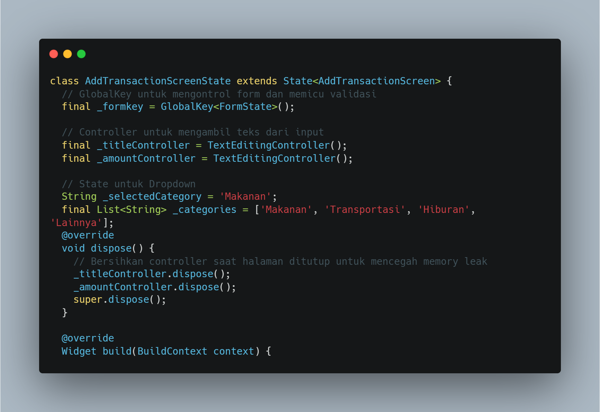
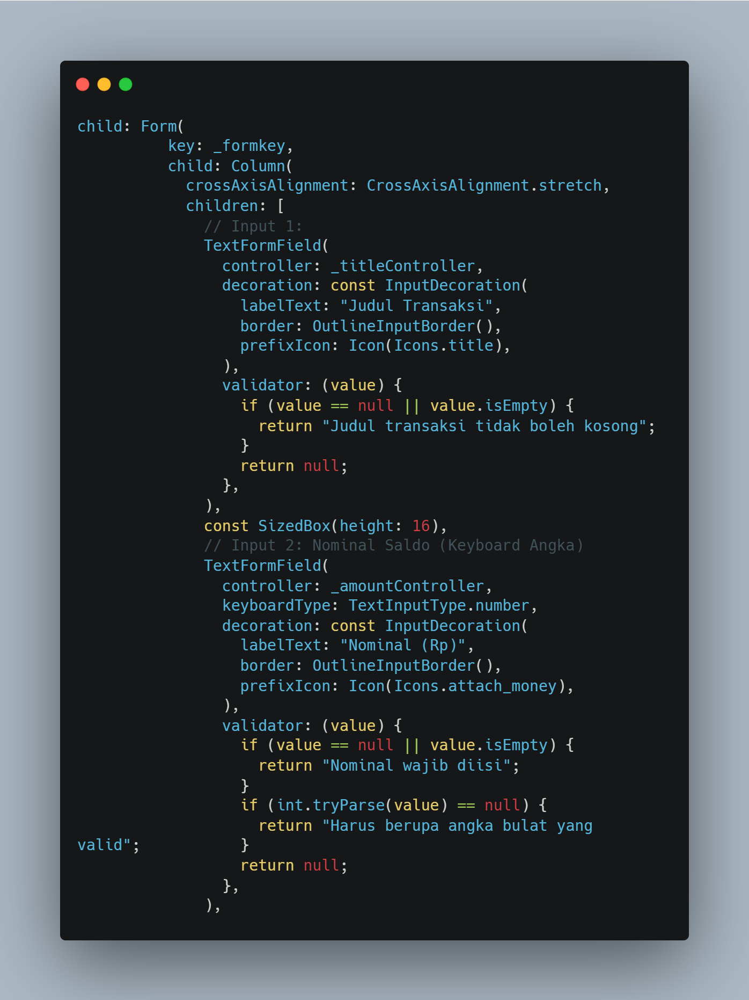
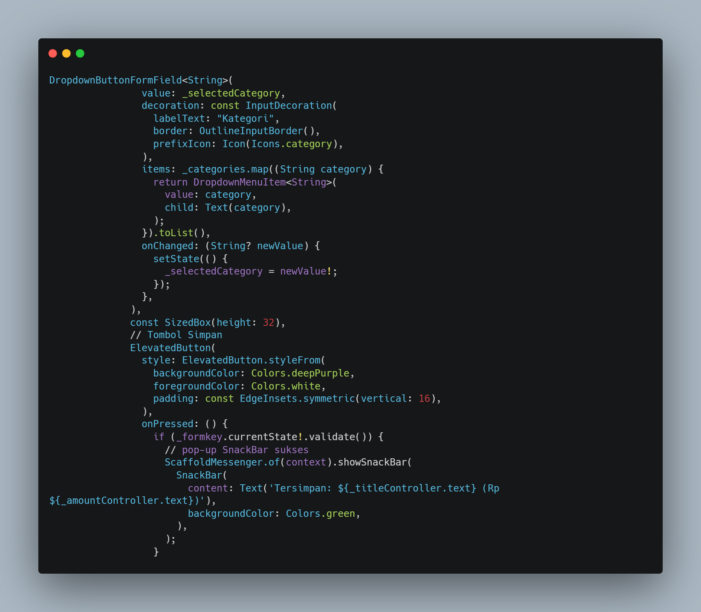
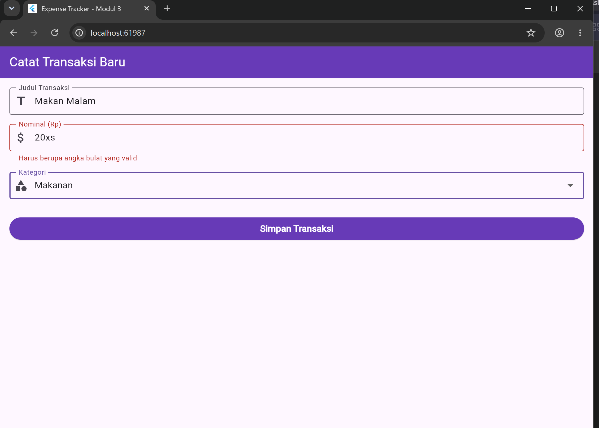
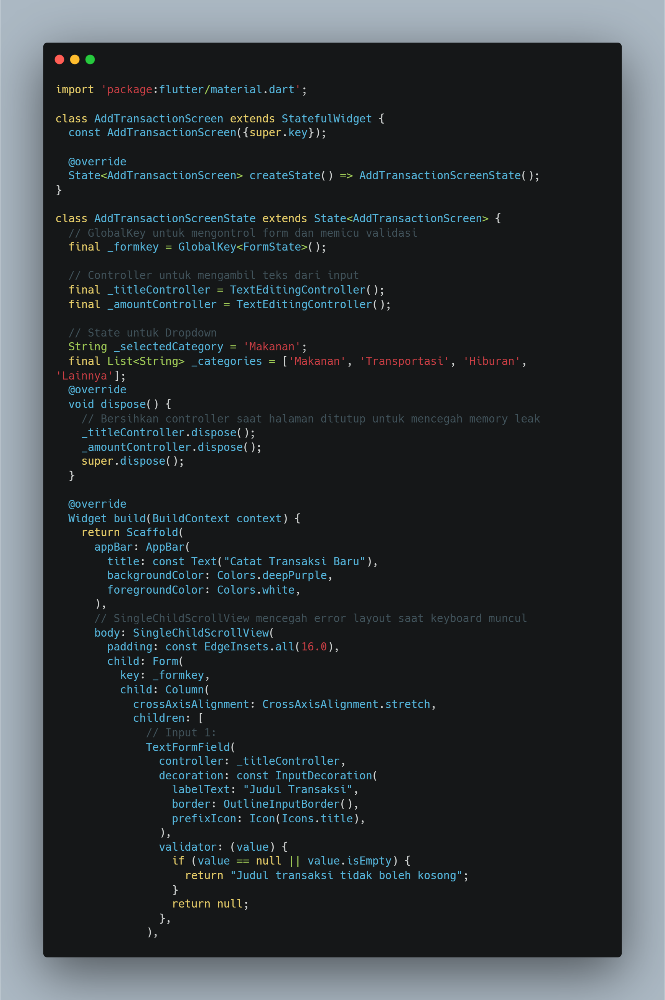
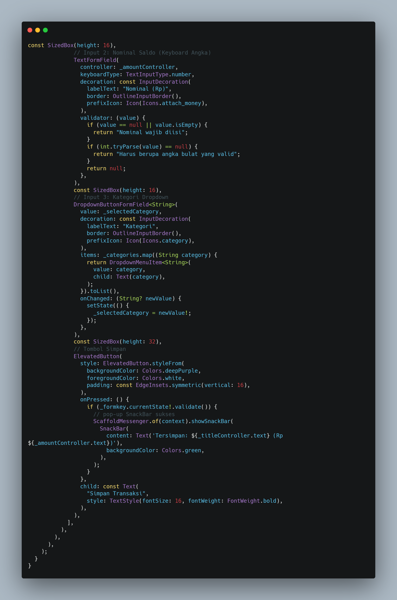
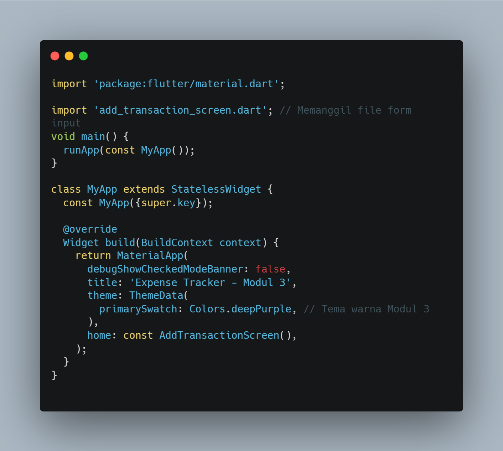
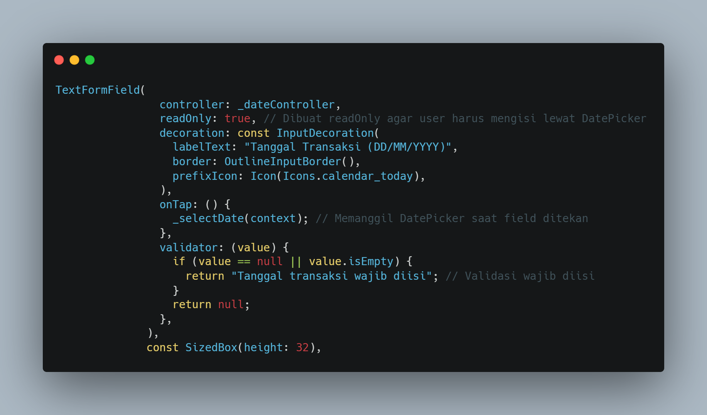
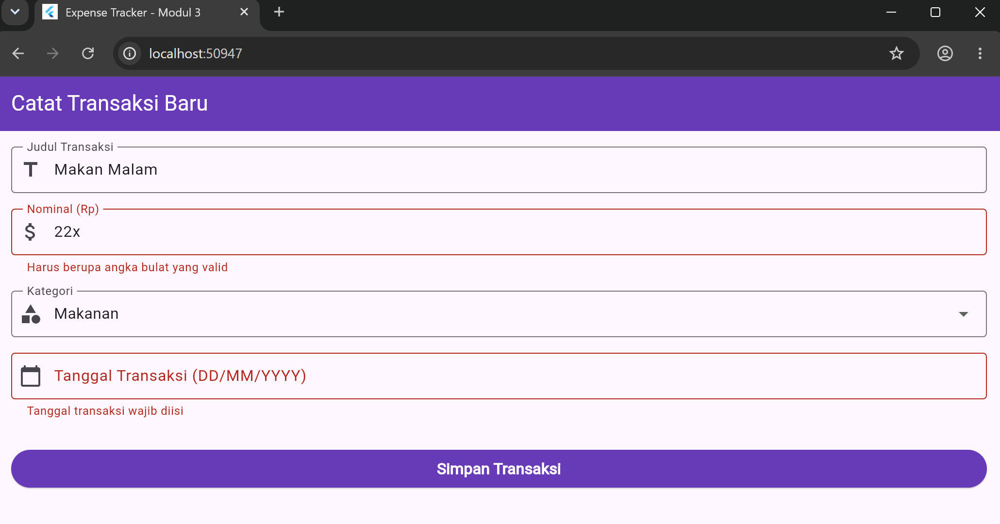

Validasi berfungsi untuk mencegah masuknya data yang tidak sesuai format sebelum disimpan ke dalam sistem. Validator adalah fungsi yang memeriksa isi kolom.
Langkah pertama adalah membuat file baru dengan nama add_transaction_screen.dart
Gunakan Stateful Widget karena isi formulir (teks & dropdown) akan terus berubah saat pengguna mengetik. Siapkan GlobalKey untuk memicu validasi dan siapkan Controller untuk judul dan nominal.
Tahap ini membuat halaman input transaksi dengan form validasi, dua field teks (judul dan jumlah), serta dropdown kategori. Controller dibersihkan saat halaman ditutup agar tidak terjadi memory leak.

Bungkus semua kolom dengan widget Form dan hubungkan kuncinya.Hubungkan controller masing-masing dan gunakan keyboardType: TextInputType.number khusus nominal.
Membangun sebuah form input transaksi dengan dua field utama: judul dan nominal.Field judul wajib diisi, sedangkan field nominal harus berupa angka bulat yang valid.Keduanya menggunakan TextFormField dengan dekorasi seperti label, border, dan ikon agar lebih jelas. Validasi dilakukan lewat validator untuk memastikan data tidak kosong dan sesuai format sebelum disimpan.

Gunakan DropdownButtonFormField untuk pilihan kategori dan tombol untuk mengeksekusi validasi keseluruhan.
Menambahkan dropdown kategori dan tombol simpan pada form transaksi. Dropdown memungkinkan pengguna memilih kategori dari daftar, lalu tombol simpan akan memvalidasi form. Jika valid, aplikasi menampilkan SnackBar hijau berisi konfirmasi data yang dimasukkan (judul dan nominal).

Berikut adalah tampilan hasil akhir dari implementasi form input transaksi yang telah dilengkapi dengan validasi dan dropdown kategori.

lib/add_transaction_screen.dart


lib/main.dart

Pada bagian latihan/tugas ini, tambahkan satu input baru sebelum tombol Simpan untuk mengisi Tanggal Transaksi.

Hasil akhir:
